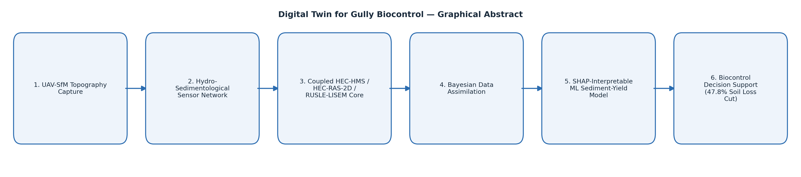

Digital Twin — Gully Biocontrol
47.8% soil loss reduction · NSE 0.88–0.94
Graphical abstract

Process simulation
Naziru explains this step
Ask a question about this work
Send Naziru a question directly, it's delivered straight to his inbox.
Viva-style Q&A about this project
A mock examiner conversation, Naziru's own answers, walked through by category.